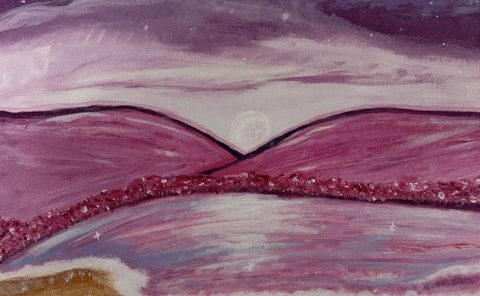
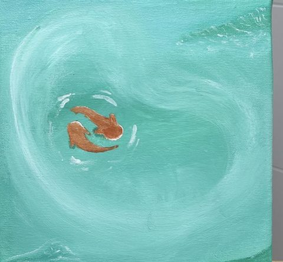

כאן התהליך מתחיל ממך. אני מתחברת אלייך באופן אינטואיטיבי, והציור מקבל צורה דרך צבע, תנועה, סימנים ואנרגיה. את לא בוחרת ציור שכבר קיים, הוא נולד עבורך, ומגיע אלייך פיזית.
יוצרת ומתקשרת, ומאמינה שלכל אחת ואחד מאיתנו יש עולם פנימי עמוק שמבקש מקום להישמע.
אני לא כאן כדי להחליט עבורך מה נכון, ולא כדי לספר לך איך החיים שלך "אמורים" להיראות. אני כאן כדי להקשיב, להתחבר, להעביר את מה שעולה, וליצור מרחב שבו תוכלי לראות משהו שכבר נמצא בתוכך, מזווית חדשה.
את לא חייבת לדעת בדיוק מה את מחפשת. לפעמים מספיק רק להרגיש שמשהו קורא לך.
איך זה עובד
מרגע ההרגשה ועד הקבלה
01
בוחרות
תקשור אישי או ציור Light Code. ואם את עדיין לא בטוחה, זה בסדר. כותבים לי ונבין יחד.
02
מתחברות
בתקשור נפגשות בטלפון, ב־Zoom או ב־WhatsApp. בציור, אני מתחברת אלייך ונותנת ליצירה להיוולד.
03
מקבלות
מסר, תובנות וריפוי, או ציור שנוצר במיוחד עבורך ומגיע אלייך הביתה. בלי למהר. פשוט לאפשר.
מילים שקיבלתי
מה שהן מרגישות
כשקיבלתי וראיתי את הציור בפעם הראשונה התרגשתי מכמה שהוא עוצמתי… המפל רק המחיש את הזרימה של האנרגיה הטבעית, וההרים הם חוזק והתמדה. תודה יובל שנתת לי להרגיש את זה בכל יום.
שניעל הציור "תקווה"

קיבלתי ממך את המתנה הכי יקרה ליום ההולדת שלי: תמונה שמבטאת את הנשמה הרגישה שלך, שתואמת מאוד לנשמה שלי. אני מרגישה את החופש, את האוויר הצח מול הים…
רחלעל הציור "חופש מול הים"

הציור מעורר בי תחושה של רוגע פנימי, חיבור לעצמי ולאנשים שאני אוהבת, ותזכורת לכך שגם בתוך תנועה ושינויים אפשר למצוא שקט ואיזון.